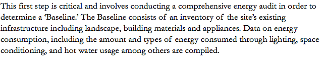
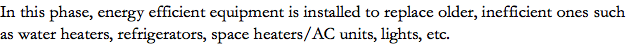

Reference "Save the Domes" by Alfred Twu
https://www.ocf.berkeley.edu/~atwu/firstcultural/domes/domes-story.pdf
Reference: http://usgbcma.org/net-zero-energy-buildings
All the sketches of the domes are by Alfred Twu.
All the sketches of the domes are by Alfred Twu.
Dome 14
Minor envelope improvement
GTAC installed for .for space heating
HPWH for water heating
Dome 13
Minor envelope improvement
GTAC installed for .for space heating
HPWH for water heating
Dome 8
Complete envelope improvement
HPWH for water heating
Dome 7 - office
Complete envelope improvement


Interested in getting involved?
Fill in a proposal here.
![The Domes at Baggins End is a cooperative student housing community located on Orchard Park Drive in Davis, CA. It was built and has been managed by UC Davis students since 1972. The Domes community consists of 15 dome structures spread across 2.78 acres including a community building (the Yurt) for events and gatherings in addition to 14 fiberglass domes (numbered 2 through 15). Dome 7 is reserved as an office while the remaining 13 units are residential domes, each accommodating two students for a total capacity of 26 people. The student residents engage in several activities including eating meals together, working in community gardens, and meeting regularly to collectively decide on important issues such as how to allocate shared resources. Historical usage data compiled between 2003 through the end of 2012, indicates an average usage of 360 kWh/month for a 2-person dome, making the energy usage of a typical “domie” a little over a sixth that of an average American(2200 kwh) . In the fall of 2011, the Domes complex under the new management of the Solar Community Housing Association (SCHA), a Davis based 501(c)(3) underwent a revitalization to renovate the 40 year old structures as well as to make them ADA (American with Disabilities Act) compliant. The project also provoked broader questions regarding the Domes long term sustainability; specifically how to maintain the Domes’ as a long term alternative housing option for UC Davis students while also preserving and highlighting its unique value as part of the larger UC Davis community. In 2012, the UC Davis Program for International Energy Technologies (PIET) began to work on the Domes Zero Net Energy projects, with the objective of demonstrating the role of community-scale projects and resident involvement in promoting ZNE technological and behavioral strategies. The result has been a series of energy experiments exploring the meaning of Sustainable Living through applied Zero Net Energy projects. These projects have had the added benefit of providing UC Davis students with the opportunity to get hands on experience in applying ZNE principles beyond the classroom while preserving the harmony of the Domes.](images/u4795-14.png)
Path to ZNE


1. Constraints (physical/bureaucratic/monetary)
Physical and monetary constraints determine whether or how close a project gets to achieving full ZNE. Physical conditions such as the amount of sun and average year round temperatures at a site will affect electric generation from solar panels, for example, and the actual size and landscape will affect what can actually be installed. Bureaucratic constraints such as zoning and permits could also be a factor. Budgetary constraints are perhaps the greatest determining factor in how much time, human power, and resources can be invested into a project.
2. Accuracy (baseline estimate, assumptions, and models)
The assumptions and accuracy of the baseline, future consumer behavior, the efficiency of the energy strategies, and the energy modeling all factor in to if or how close a project gets to ZNE.
Baseline
Envelope
Energy Efficiency
On-site Production
Follow-up
Once the baseline has been established, efficiency strategies, which are defined as any interventions that reduce energy consumption without reducing the overall level of services, can then be evaluated through modeling. Site performance post retrofits and interventions is assessed by comparison against the baseline.
In every step of the process the system is re-evaluated to assess the efficacy of the retrofits and installations.
Cutaway View
Aerial View
Cross-section
Wall-section
1 - 4
<
>
Summary

![The Domes community consists of 15 dome structures spread across 2.78 acres. Each dome accommodates two students in 450 sq. ft. The domes are built on concrete slabs, with fiberglass and polyurethane wall construction, double-pane aluminum-framed windows, and wooden doors. Load bearing elements include: a refrigerator, an electric oven & range, an electric domestic hot water heater, general lighting, an electric space heater, and wall plugs. No space cooling units were installed in the original domes. Many of the equipment vary by dome and have been replaced over the course of 44 years. Other utilities include water and sewage. Total estimated usage per dome per month came out to 360 kwh. The summary of the Baseline yields interesting and useful results. In the average American household, space heating and cooling constitute most of the energy usage with the water heating coming in second. However, in the Domes the situation is reversed, attributable to a combination of the “Domie” lifestyle and space considerations. Water use within a home is mostly a function of the number of residents. Space heating and cooling on the other hand is related to the area of the house and the level of use that residents make of the space conditioning equipment, which for the Domes is reduced in both cases. In other words, the average Domie both uses space conditioning equipment less and has much less space to condition. The average US household has 2.58 residents and is 1,971 sq. feet (2010 US Census and US Energy Information Association). The typical American uses on average 903 kwh of energy per month. Each dome, on the other hand accommodates 2 residents and spans 450 sq. feet. The typical “Domie” ends up using on average 360 kwh each month. [Source – EIA and Baseline report]](images/u7822-12.png)
Energy Usage
![The Domes complex receives only electric service and all the buildings are connected to one master site meter. Baseline Energy usage (kWh) was determined by reviewing historical electricity bills (2003-2011) excluding anomalous data from 2003, 2011-12 (construction years), and data post construction (2012-13). Average energy use came out to 360 kWh/month/dome. The challenge in estimating per dome usage is that the site is hooked into one meter, which includes not only residences but also the community building (Yurt). Furthermore, past occupancy data is limited further complicating the matter of estimating usage.](images/u7801-4.png)

Building

Historical Usage
![Two surveys were conducted to better understand residents’ usage behavior. The energy surveys included questions about heating and cooling comfort, use of appliances and plug loads, water usage, and residents’ lifestyle. They were also used to estimate the length of operation of various load-bearing devices, and to solicit occupant feedback. The final element in the consumption survey was a 1 hr discussion with the former maintenance manager at the domes. The discussion with him focused on recommendations for dome improvement as well as a guide to equipment installed inside the domes.](images/u7812-6.png)

Load Bearing Elements


Infrared Imaging


![Infrared imaging provided insight into sources of heat gain and/or loss due to inefficiencies in the dome envelope. The higher an objects temperature, the more infrared (IR) light is emitted. An IR camera can detect this radiation, which can then be converted into a color scale that differentiates temperatures. The warmest objects appear in reds and yellows while the coolest appear in blue as in the image of Dome 7 below. The camera was used to detect areas of thermal weakness, regions where heat can leak in (gain) and out (loss) of the dome, as well as to estimate insulation R-values. Three independent experiments were conducted with the aid of an IR camera. All three experiments were carried out in May of 2012. IR images of dome 7 were taken under two different conditions: • Heating – Before sunrise, Dome 7 was heated using several space heaters to ensure homogeneous temperature distribution to an inside temperature of roughly 72 °F. Outside air temperature was 55 °F. This condition was used to detect heat leaks and to estimate R-values. • Cooling – In the hot afternoon, Dome 7 was cooled using a 1.5 ton portable air conditioning unit to simulate summer cooling conditions. A final test employed IR images to estimate the R-value of Dome 7’s insulation. An R-value is the capacity of an insulating material to resist heat flow, the higher the R value greater the insulating power. R-values were estimated by placing a piece of insulation material of known value on one half of a window and imaging Dome 7. By comparing IR data (Mikron IR thermal imaging software) from the known insulation against the rest of the dome, rough empirical R-values were calculated.](images/u7836-16.png)
![Envelope Modifications & Energy Efficient Water Heating in Domes 7/8. This first study began in Spring 2012, focusing on envelope design (ZNE path step 2) with a complete gutting and remodel of Domes 7 and 8 (northeast corner of the property). Before replacing any equipment, envelope modifications were implemented to minimize wasted energy that is lost in the form of heat through the walls, windows, and doors. Initial steps were also taken to install energy efficiency equipment (ZNE step 3) by replacing the primary source of energy usage, the hot water heater. The conventional electric hot water heater in Dome 8 was replaced with a modern hybrid heat pump-electric system rated at twice the efficiency.](images/u8506-6.png)
What retrofits were made ? (Description).
Dome 7 was remodeled into an ADA (Americans with Disabilities Act) compliant office, which includes a half bath and no space heating capabilities. Dome 8 has remained a residential dome. The 2” polyurethane foam from both domes was delaminated and replaced with a 4” soy based spray foam. Insulation was also added to the concrete slab. The windows, doors, and skylight were replaced with air tight, energy efficient models. All electrical and plumbing was replaced. The baseline previously determined that 63% of energy use in the Domes can be attributed to water heating. For this reason the electric water heater in Dome 8 was replaced with a heat pump model with twice the efficiency.

What was the setup of this study in Dome 8? (Design)
Dome 8 is continuously monitored head to head against control Domes 6 and 10. Dome 6 and 10 have not undergone modifications of any kind except for regular maintenance. Domes 6 and 10 also have the original Honeywell HW4000 space heater.

What was the motivation behind this study? (Motivation).
The purpose of this study was twofold:
· First, given the challenges of the original baseline study, to retrofit 3 domes with multisensory data loggers to collect real-time data in order to validate past work and to build a more accurate model of the baseline; and
Second, to update domes 7 & 8, specifically to improve the dome envelope and to compare conventional electric hot water heating with more advanced heat pump technology.
How was performance measured? (Methods)
Performance is measured in real time, using data loggers connected to three different sets of sensors:
1) Current transformer devices that were installed directly into the each Domes’ breaker box and measures current, voltage, and power output;
2) Relative humidity and temperature sensor to monitor internal climate and compared to local meteorological data;
3) Water temperature and flow rate to monitor performance of domestic hot water heating.
Comparing Space Conditioning Technologies in Domes 13/14/15
The second domes study targeted energy efficiency modifications (ZNE step 3) and was made possible by PG&E. This study began during Spring Quarter 2013 in domes 13, 14, and 15, and was designed to compare the use of various heat pump technologies in the domes. Specifically, this study targeted the top two sources of energy use in the domes, space and hot water heating. Minor envelope upgrades were also made to Domes 13, 14, and 15, although these upgrades were not nearly as expansive as Domes 7 and 8 in Energy Experiment 1.
What retrofits were made ? (Description).
Domes 13, 14, and 15 were upgraded with slab insulation, new energy efficient doors and skylights as well as with less energy intensive LED lighting. Unlike Dome 8, these domes, did not have energy efficient windows installed and did not receive upgraded wall insulation. Domes 13/14/15 were each originally built with a 30 gallon electric hot water heater. As part of this study, these three units were replaced with one 80 gallon model connected in parallel to all three domes.
What was the motivation behind this study? (Motivation).
To study and compare the effects of various heat pump technologies in Domes 13, 14, and 15. Heat pump technology replaced the conventional electric resistor type hot water and space heaters. Furthermore, as the domes were not originally built with cooling, the goal of this study was to test two types of dual heating/air conditioning heat pump systems (GHP/GTAC vs. AHP/PTAC) that would both save energy and give the residents the added option of domestic cooling. This expanded level of service also carries with it the potential for increased use and therefore increased energy usage, which we were interested in testing.
What was the setup of this study? (Design)
GTAC systems were installed in Domes 13 and 14. Meanwhile, a PTAC system was installed at Dome 15 for comparison. These were both compared to the Honeywell HW4000F units in domes 6, 8, and 10.
The efficiency of the 80 gallon heat pump water heater was compared to the 50 gallon heat pump water heater in dome 8 as well as to the conventional, electric hot water heater in domes 6 and 10.
For the purpose of both comparisons it is important to note that Domes 13, 14, and 15 have an upgraded envelope compared to control Domes 6 and 8, although the upgrades are not as comprehensive as Dome 8.
Domes 13/14/15 were each originally built with a 30 gallon electric hot water heater. As part of this study, these three units were replaced with one 80 gallon model connected in parallel to all three domes.
How was performance measured? (Methods)
Performance is measured in real time, using a data logger that is connected to 3 different sets of sensors:
1) Current transformer devices that are installed directly into the each Domes breaker box and measures current, voltage, and power output;
2) Relative humidity and temperature sensor to monitor internal climate and compared to local meteorological data;
Water temperature and flow rate to monitor performance of domestic hot water heating as well as flow rate on the ground water loop for the GHP systems.
Heat Pump
HPWH
PTAC
GTAC

Heat pumps use external power to move thermal energy against the natural temperature gradient from a region of lower temperature (heat sink) to a region of higher temperature by employing a refrigerant cycle. Refrigerant cycles work by passing a refrigerant such as Freon through a compressor, followed by a condenser coil, an expansion valve, and finally an evaporator coil before looping back. For a detailed description, refer to the image below.
This same technology is used in many modern AC and refrigeration units. Heat pumps are ideally suited to regions of relatively mild weather conditions and often include a backup electric resistor in order to employ traditional heating when necessary. Compared to the original electrical heater, a heat pump can save up to 85% energy consumption while providing air conditioning service in both summer and winter.
http://www.vent-axia.com/heatpump/how
https://www.energystar.gov/products/water_heaters/high_efficiency_electric_storage_water_heaters/how_it_works
Heat pump water heaters use electricity to pump heat from one place to another rather than to directly generate heat. Refrigerators work by collecting heat from inside a chamber and dumping it to the environment. HPWH work in reverse, collecting heat from the surroundings and pulling it in to a chamber to heat water.


Package-terminal Air Conditioning (or Air-source Heat Pumps) utilize the outdoor air to release and absorb heat for indoor space heating/cooling effect. These systems use an exterior fan and a refrigerant cycle to transfer heat between the dome inside and the outdoor air.

Ground source-terminal Air conditioning (or Ground-source Heat Pumps) work in the same manner as PTACs except that instead of exchanging heat with the ambient air, GTACs exchange heat with the ground. This is accomplished through an intricate, underground circuit of pipes to transfer heat between the dome and the ground. These systems can be very efficient but also very costly and difficult to install.

Energy savings since March 2013:

![Suggested PIRE Research areas for Dr. Kurt Kornbluth & UC Davis PIET Test Bed-UC Davis Domes The Domes “Path to ZNE” project will demonstrate the role of community-scale projects and resident involvement to promote zero-net energy technology and behavior strategies. While many of these technologies and subjects have been studied in other contexts, this study will focus on the impact of installing an integrated group of technologies, tracking, and display devices on residents living in a small, physically compact community with a large amount of community interaction. In 2013 the project (partially funded by Pacific gas and Electric) will examine the viability of community scale geothermal heat pumps for water heating and space conditioning. The UC Davis team will gather data on the impact of energy efficiency upgrades to the buildings on energy use and on human comfort. It will install energy use tracking and displays and study the effect of these displays on the behavior, in terms of energy use, of the residents. Future work (2014 and onward) includes incorporation of solar thermal water heating and storage, additional energy efficiency measures (technical and behavioral), and ongoing energy use monitoring and analysis.](images/u9005-14.png)